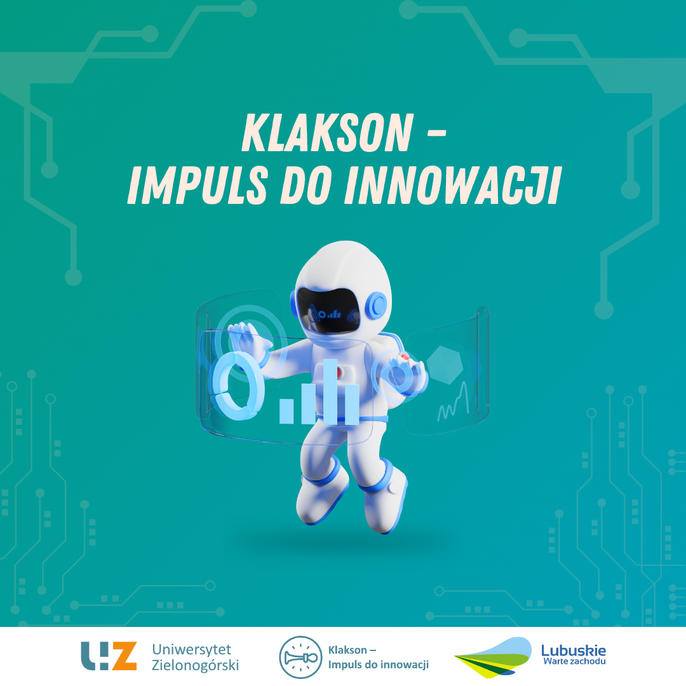
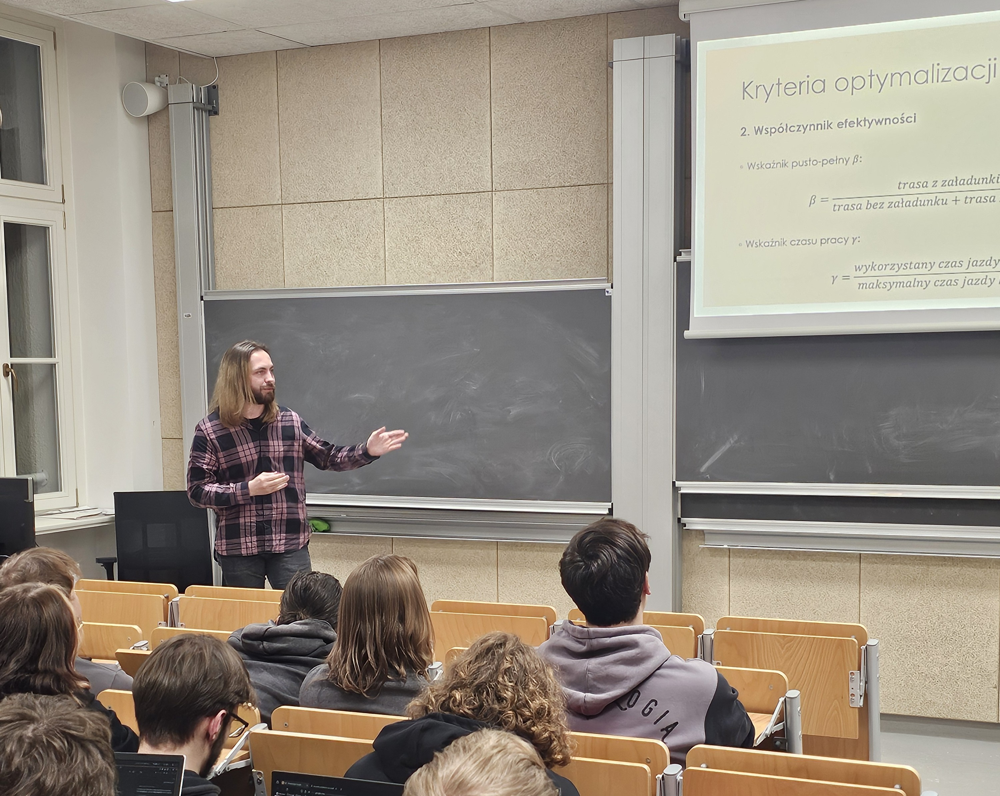

W dniu 27 listopada 2025 r. nasze Koło Naukowego Matematyki Stosowanej Insight odwiedziło Wydział Matematyki Politechniki Wrocławskiej, gdzie odbyło się spotkanie o charakterze integracyjnym i naukowym, poświęcone prezentacji działalności studenckich kół naukowych oraz nawiązaniu współpracy międzyuczelnianej. W wydarzeniu uczestniczyły cztery koła naukowe PWr: Koło Matematyki Przemysłowej, Koło Naukowe Statystyki Matematycznej Gauss, Koło Naukowe Inżynierii Finansowej przy Centrum Metod Stochastycznych im. Hugona Steinhausa oraz Koło Naukowe Matematyki. Nasz wyjazd został zrealizowany w ramach projektu „LiDARLab – system pozyskiwania i analizy danych 3D do zastosowań inżynierskich i komercyjnych”, dofinansowanego w ramach konkursu „Klakson – Impuls do innowacji”, edycja VI.



Podczas spotkania nasi członkowie przedstawili działalność KNMS oraz założenia i cele projektu LiDARLab – system pozyskiwania i analizy danych 3D do zastosowań inżynierskich i komercyjnych. Projekt ten, realizowany na Uniwersytecie Zielonogórskim, obejmuje rozwój metod skanowania przestrzennego, analizy danych 3D oraz opracowanie autorskich narzędzi wspierających diagnostykę techniczną i procesy inżynierskie. Dotychczasowe efekty prac nad tym projektem zaprezentowała Justyna Czyż (41ID-SP).


W drugiej części prezentacji przedstawiliśmy wybrane projekty realizowane w ostatnim czasie w ramach działalności naszego Koła:
- Projekt 1: Estymacja poziomu wody w rzece Odrze na wysokości Huty Miedzi Głogów, realizowany przy współpracy z KGHM Centrum Analityki (Agata Omasta, 31ID-SP).

- Projekt 2: Squash Tracking & Prediction System – system śledzenia ruchu zawodników i predykcji trajektorii piłki w squashu (Maksymilian Pozaroszczyk, 41ID-SP).

- Projekt 3: Kompleksowe badanie snu – projekt wykorzystujący narzędzia statystyczne i analizę sygnałów biomedycznych (Martyna Białas, Hubert Grzymkiewicz, 31ID-SP).

- Projekt 4: Optymalizacja pozyskiwania długoterminowych zleceń przewozowych z giełdy transportowej – analiza danych i modelowanie procesów branży TSL (Adam Mazanik, 21MAT-SD).

Studenci z Politechniki Wrocławskiej zaprezentowali natomiast kierunki badań i przykładowe projekty realizowane w ich kołach.


Spotkanie miało na celu wymianę doświadczeń, poznanie różnych perspektyw badawczych oraz zainicjowanie współpracy między kołami naukowymi obu uczelni. Dyskusje prowadzone po prezentacjach potwierdziły duży potencjał wspólnych działań, zarówno o charakterze naukowym, jak i projektowym. Strony wyraziły chęć rozwijania współpracy obejmującej wspólne warsztaty, udział w konferencjach, wymianę wiedzy oraz możliwość realizacji wspólnych projektów przemysłowych wykorzystujących kompetencje studentów obu ośrodków akademickich.


Wizyta na Politechnice Wrocławskiej była dla naszego koła cennym doświadczeniem, pozwalającym nawiązać nowe kontakty, wymienić inspiracje badawcze oraz poszerzyć perspektywę działań. Stanowi ona ważny krok w kierunku budowania długofalowej współpracy między zespołami akademickimi zajmującymi się nowoczesnymi zastosowaniami matematyki, analizy danych i modelowania.